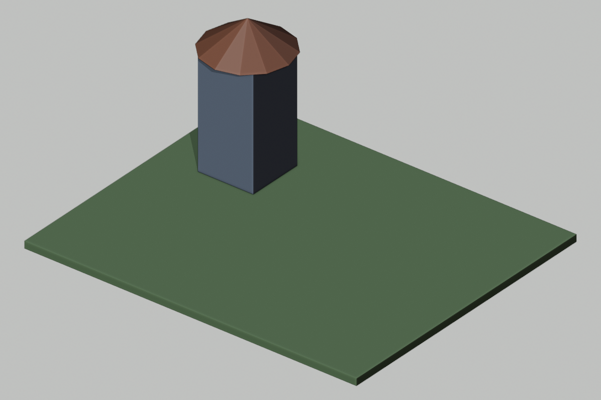

Algorithms across the river
Today’s result: An eight-plank bridge across the river

Teacher runs Blender. Every student predicts,tests,and records a revision.
The ideas we need today
- A span is end minus start: Distance on a number line is right endpoint minus left endpoint.
- Efficiency needs a named measure: Efficiency means using fewer resources for the same required result.
- A sequence and its trace: An algorithm is an ordered method.
The full explanations and code card are on today’s student lesson page.
The rules we will use and check
- A loop changes representation: A loop repeats its body, the instruction inside it.
- Duplicate positions can hide a gap: Eight list entries need not be eight unique locations.
- Keep an odd or even row centered: For n touching 1-unit planks centered around x=0, the first center is -(n-1)/2.
Explain one rule in your own words before starting the examples.
Worked example 1
Watch a loop produce the same three markers
Animated teaching diagram · silent captions · 1 world unit = 1 meter. These are worked examples, not a recording of Blender.
Worked example 2
Keep six planks centered around zero
Animated teaching diagram · silent captions · 1 world unit = 1 meter. These are worked examples, not a recording of Blender.
Try one with your teacher
1. For four centered planks, list centers and span.
Show the worked answer after trying
Centers -1.5,-.5,.5,1.5. Outer edges -2,2. Span=4. Check that neighboring edges touch.
2. A four-entry list is -1.5,-.5,.5,.5. What is wrong, and which test catches it?
Show the worked answer after trying
The .5 repeats and1.5 is missing. A full trace/uniqueness check and endpoint check catch it;count4 alone does not.
Your independent assignment
- Section 1: Write eight explicit instructions
Eight create lines with unique positions. - Section 2: Write and trace the repeated version
A repeat algorithm,eight-row table,and span drawing. - Section 3: Compare and change the design
Comparison table and10-plank revision.
Write on your sheet,notebook,or usual school document. Use the full directions on the lesson page.
While the teacher computer works
First: finish the required sections.
Then: Repair the missing last plank.
List supplied by an AI: -3.5,-2.5,-1.5,-.5,.5,1.5,2.5,2.5. Mark what repeats and what is absent. Draw the uncovered interval. Write a corrected list. Explain why counting eight items alone does not prove eight distinct plank positions.
Finished that? Begin ChoiceA on the student page.
What changed in our world?

Our actual evidence source: scene / object report / screenshot / paper / simulation.
I predicted____.The evidence showed____.I revised or confirmed____because____.
Before you leave
- Submit the required numbered sections.
- Add one evidence-based revision or confirmation.
- Complete the six-question check as your teacher directs.
- Label any simulated or unknown result honestly.
There is no requirement to finish every extra activity.